01
分かりやすい説明
初めてのリフォームでも不安にならないよう、工事内容やプランを分かりやすくご説明します。初めてのリフォームだからこそ、分からないことがあって当然です。
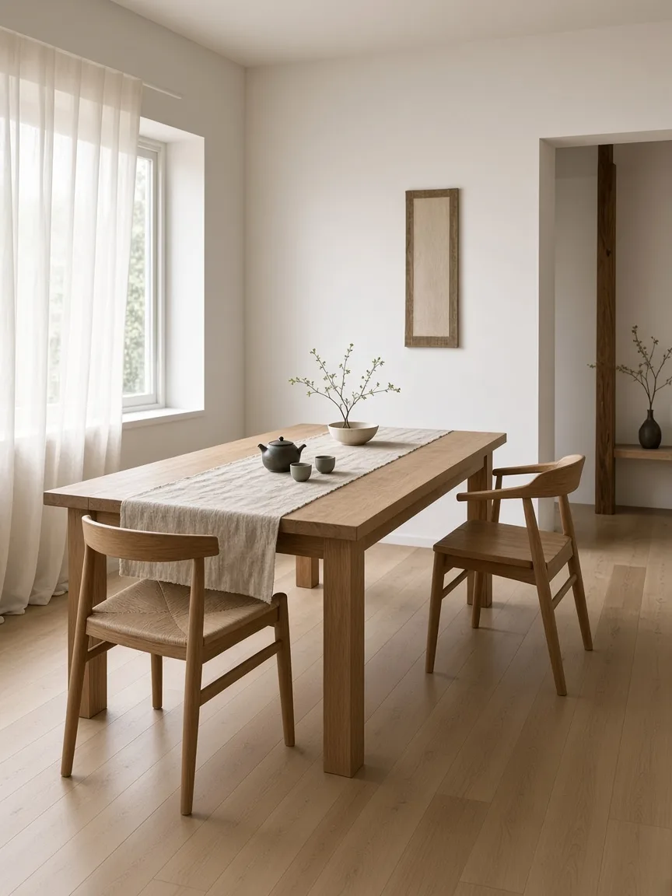
大阪市東淀川区 ／ リフォーム・リノベーション
中古住宅のリノベーションから、間取り変更、水回り、内装、耐震まで。ご希望とご予算を丁寧にお聞きし、これからの暮らしに合った住まいをご提案します。
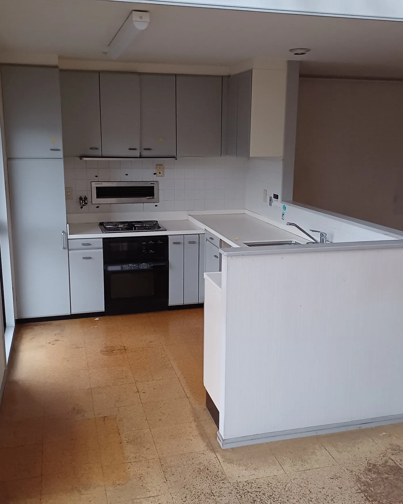
WORKS
豊中市・戸建て
中古住宅の2世帯リノベーション
01
リフォームは、何から始めればいいのか分からないもの。だからこそ、松下ハウスはご希望を一つひとつ伺うところから始めます。
築年数が経ち、あちこちの劣化が気になっている。
今の家族構成や生活に、現在の間取りが合わなくなってきた。
購入した家を、自分たちの暮らしに合わせてリノベーションしたい。
キッチン・浴室・洗面・トイレなどを新しくしたい。
部分的な修理ではなく、住まい全体を見直したい。
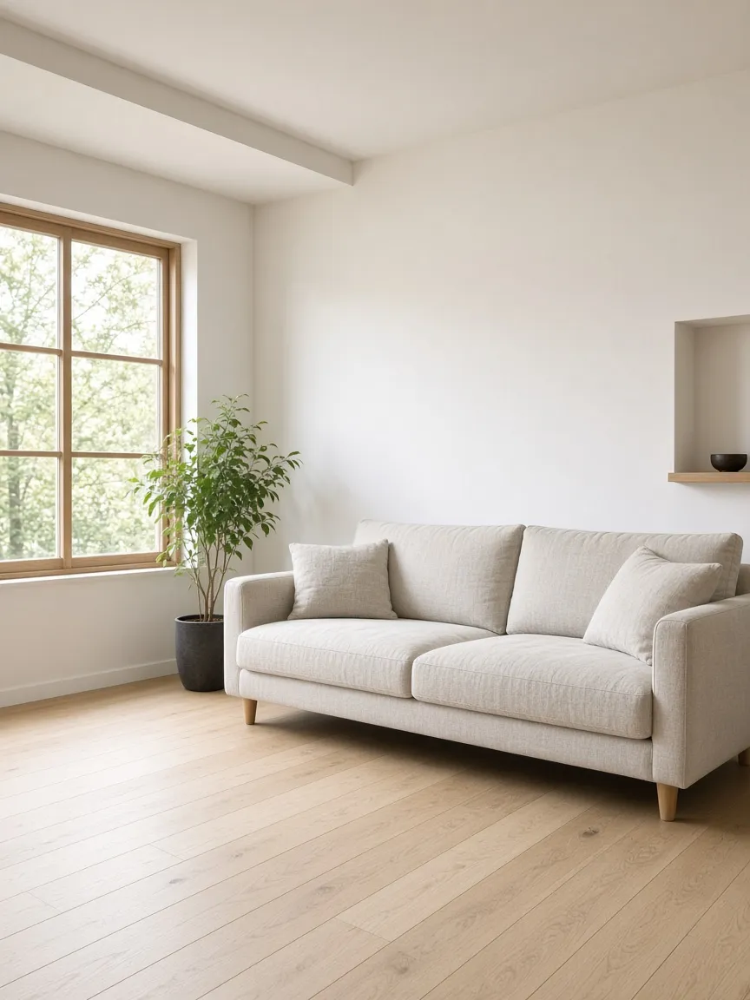
02 松下ハウスが選ばれる理由
01
初めてのリフォームでも不安にならないよう、工事内容やプランを分かりやすくご説明します。初めてのリフォームだからこそ、分からないことがあって当然です。

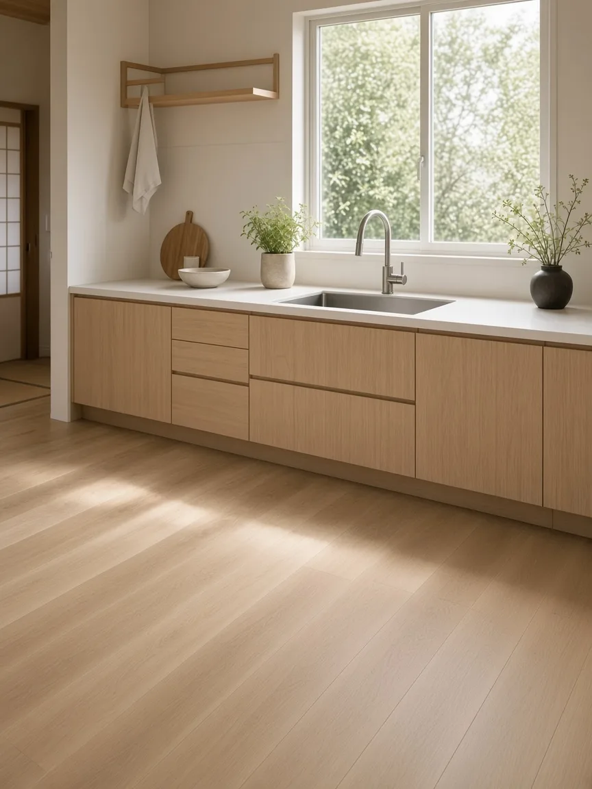
02
「ここを直したい」だけでなく、その先の暮らしまで考えて、住まいの使い方をご提案します。他社と比較したうえで、プランに納得して選ばれている声が公式サイトに残っています。
03
戸建て・マンションのリノベーションから、間取り変更、増築、耐震、水回り、内装まで、幅広い施工事例があります。水回りの取り替えから、2世帯のフルリノベーションまで手がけています。
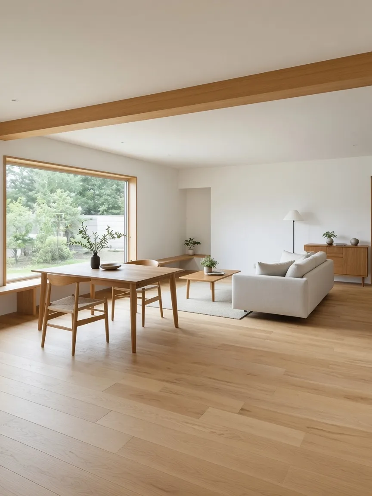
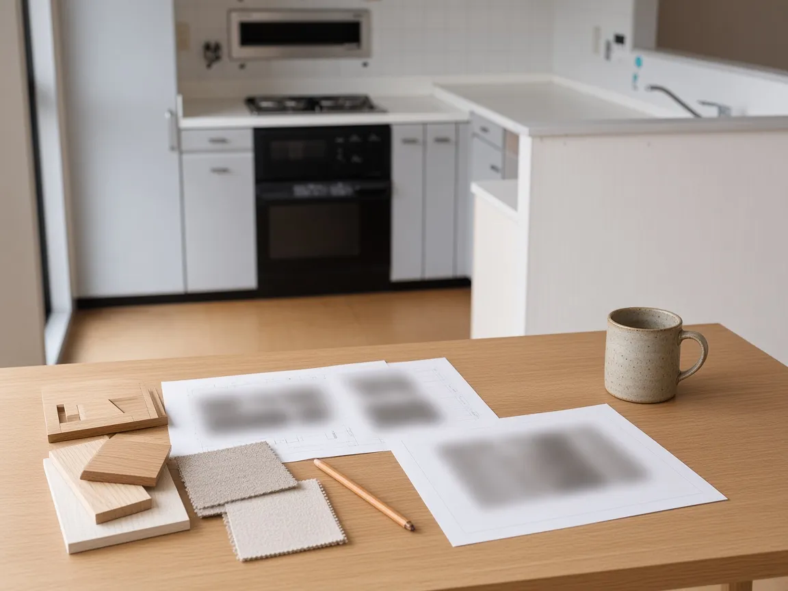
04
口コミでは、担当者からのこまめな連絡も評価されています。工事中の変更や確認も含め、安心して進められることを大切にしています。見積後にお断りいただいてもかまわない、と公式サイトでも案内しています。
自分の家の場合、
どこから考えるとよいか。
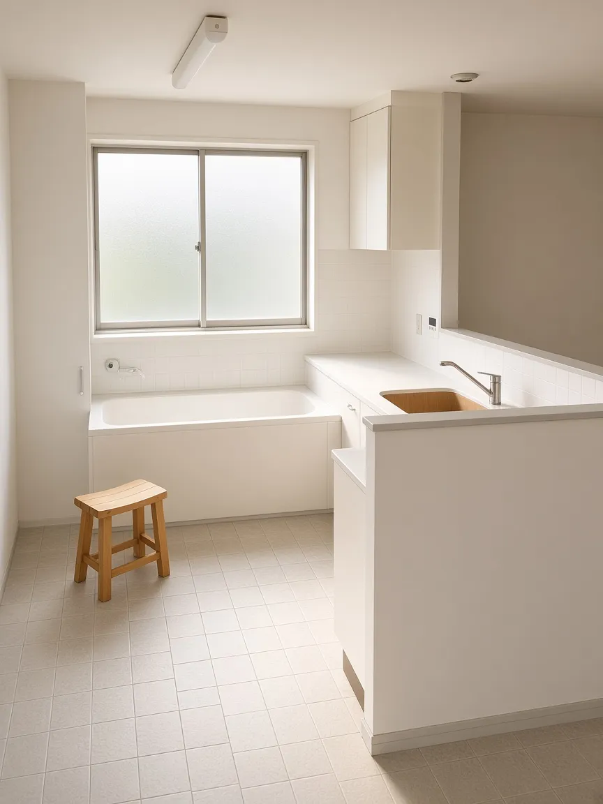
03
部分的な取り替えから、住まい全体の作り直しまで。公式サイトの施工事例で確認できる範囲を、相談の入り口として整理しています。
築年数の経った木造住宅や、中古で購入した戸建てを、これからの家族構成に合わせて作り直します。
間取りの使いにくさや、水回り・内装の古さから、マンション全体の改装まで相談できます。
家族が増えた、個室が欲しい、二世帯で暮らしたい。暮らし方から、部屋のつながりを見直します。
今の家を残しながら、必要な広さや用途を足す工事です。公式サイトには増築・改築の案内があります。
耐震診断士が在籍し、木造住宅の耐震補強に関する団体にも加盟しています。
キッチン、浴室、洗面、トイレ。毎日使う場所を、使いやすさと清潔さから整えます。
床、壁、建具、収納など、過ごす時間の長い部屋の仕上げを見直します。
公式サイトでは、水回り商品のほか、エコ内窓やエクステリアも案内しています。対応できる工事の範囲は、住まいの状況を確認したうえでご説明します。
04
施工前の悩みから、完成後の暮らしまで。写真と金額は、公式サイトに掲載されている施工事例です。
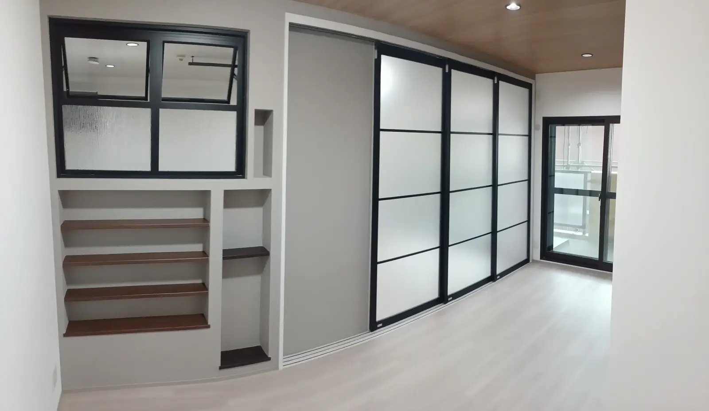
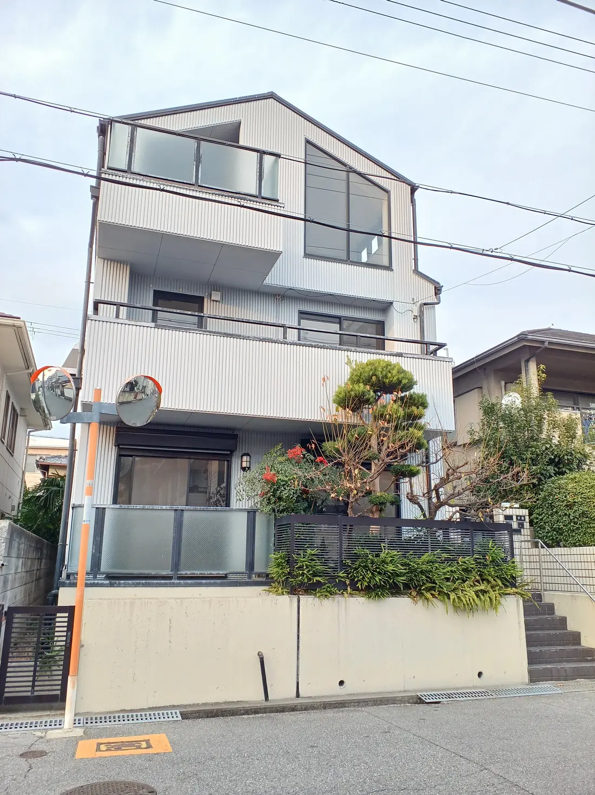
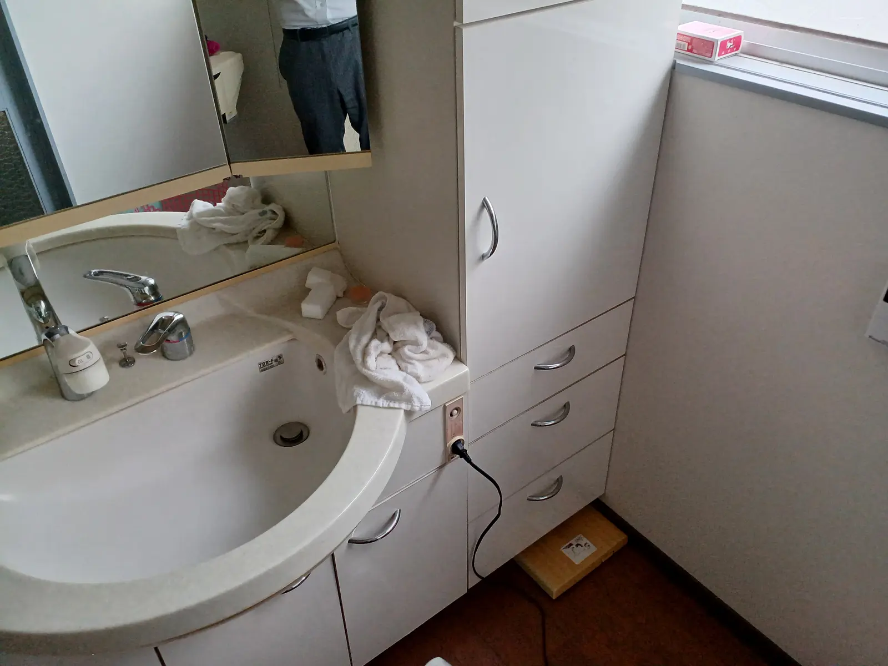
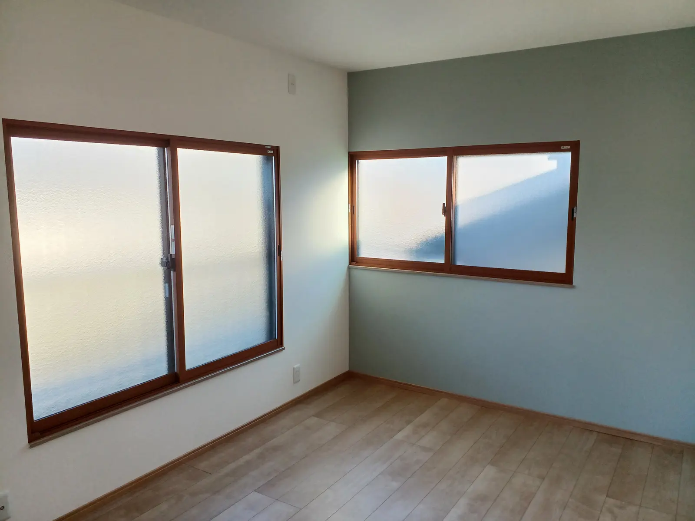
2026年の施工情報では、780万円のハーフリノベーション、985万円のリノベーション、1,640万円の戸建てフルリノベーション、豊中市の鉄骨＋木造1,850万円なども掲載されています。吹田市のマンション（和室と水回り・500万円）や、淀川区の戸建て水回り（800万円）の事例もあります。
05
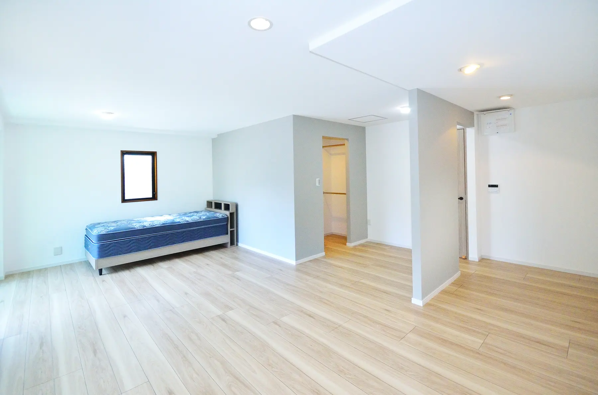
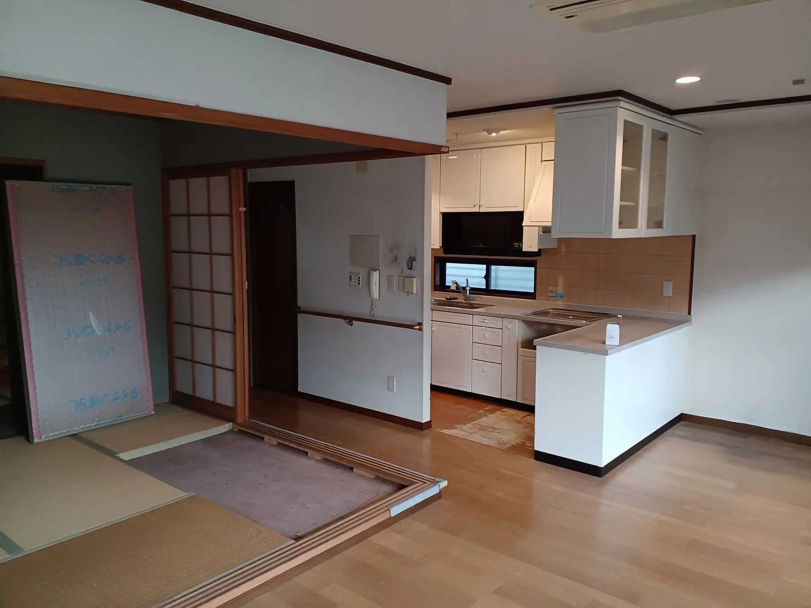
豊中市・戸建ての比較写真です。境目を左右に動かすと、施工前と施工後を見比べられます。写真は公式サイトの施工事例から使用しています。
06
他社さんにも見積をお願いしていましたので、やはり値段と提案力で松下さんにお願いすることにしました。良かったです。
リノベーション専門店という事で、見積りを２～３社とりました。その中で提案プランが良かったですので、松下ハウスさんに頼みました。期待通りの仕上がりでした。
金額的にも、提案内容や、メンテナンスにおいても、他社の大きなリフォーム会社にひけを取らない会社だと思い、頼みました。小さな会社だけに小回りもきき、安心で来ました。
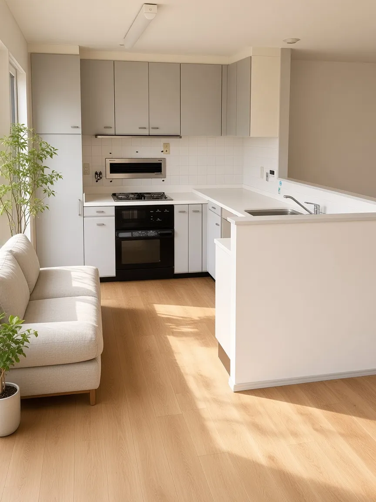
工事内容やプランが分かりやすかった、という評価が繰り返し見られます。
他社では出なかった案や、暮らしに合うプランが選ばれる理由になっています。
問い合わせから工事中まで、担当者の対応を評価する声があります。
口コミでは、担当者からのこまめな連絡も挙がっています。
期待どおり、想像以上、という完成後の感想が公式サイトに残っています。
安さだけなく、価格・プラン・説明を比べたうえで選ばれています。
文章は公式サイト「お客様の声」に掲載されている内容を短く抜粋しています。Googleの口コミ本文は、掲載条件の確認前のため転載していません。お客様の声の横の室内写真は、提案用のイメージです。
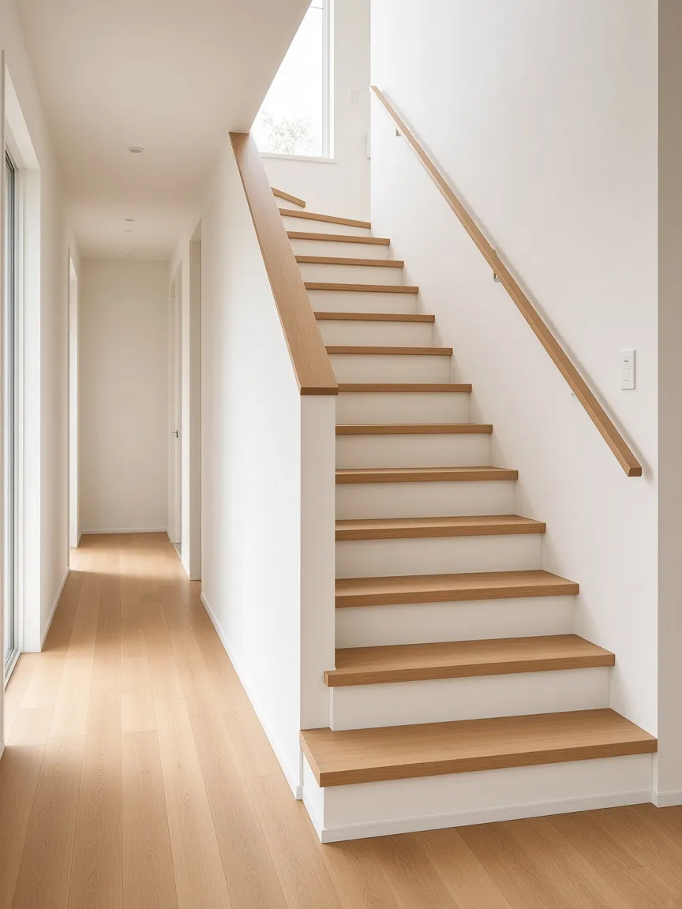
07
相談からお引き渡しまでの流れです。契約のタイミングや保証の条件は、お見積もりの際にご確認ください。
現在の住まいの悩みや希望をお聞きします。
住まいの状況を確認し、希望や予算に合わせてプランを検討します。
工事内容と費用を確認します。見積もりは無料です。
内容をご納得いただいたうえで進めます。
必要な工事を進めます。変更や確認も、その都度ご相談ください。
完成した住まいを確認します。工事後の相談先も案内しています。
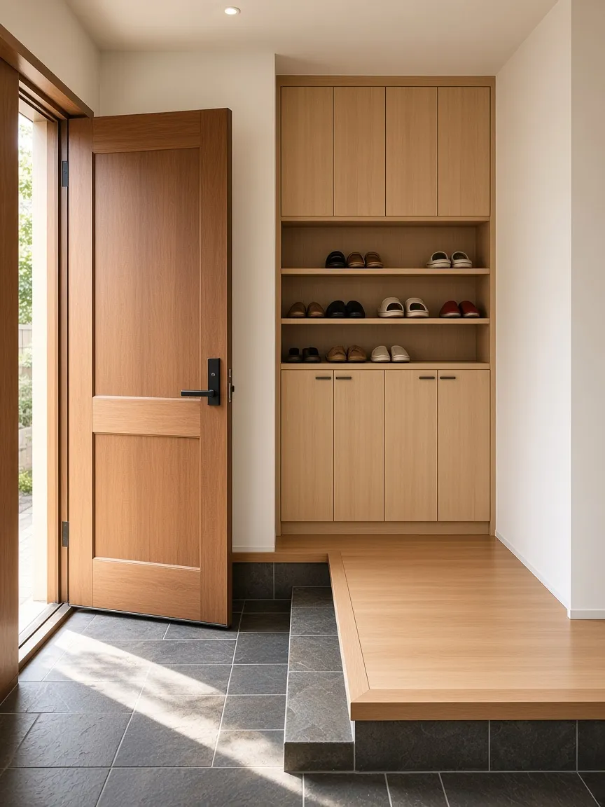
08
松下ハウスは、大阪市東淀川区を拠点に、住まいのリフォーム・リノベーションを手がける会社です。
私たちが大切にしているのは、ただ古くなった場所を直すことだけではありません。「どんな暮らしをしたいのか」「今の住まいのどこに困っているのか」「どこまで変えれば、もっと暮らしやすくなるのか」。お客様のお話を伺いながら、一つひとつ考えていきます。
公式サイトでは、専門家としてのアドバイスと改修工事を通じて、大切な住まいを守り、長いお付き合いをしていきたい、と案内しています。
資格・認定は会社概要に掲載されている保有資格です。住宅リフォーム瑕疵保険、工事総合補償保険（対人・対物1億円・東京海上日動）にも加入しています。リノベーション協議会、木耐協、大阪府建築士事務所協会にも加盟しています。
09
ご希望や、今の住まいの困りごとをお聞かせいただくところからで大丈夫です。公式サイトでは、初めてのお見積りはご要望に沿って提示し、ご予算をお聞きしたうえで材料や商品を吟味する、と案内しています。
中古物件のリノベーション事例があります。豊中市では、スキップフロア型の中古戸建てを2世帯にしたフルリノベーション（2,800万円）を掲載しています。
公式サイトでは、リフォーム全般に対応しており、電話でお答えできる内容であれば小さい工事も相談できる、と案内しています。
公式サイトのよくあるご質問では、リフォームの見積もりはすべて無料、と案内しています。見積後にお断りいただいてもかまわない、とも記載されています。
公式サイトでは大阪府全域を施工エリアとして案内しています。兵庫県、京都府、奈良県、和歌山県からも、一度お問い合わせください。本社は東淀川区東中島、最寄りは新大阪駅です。
お客様の声では、工事の対応や担当者とのやりとりが評価されています。公式サイトでは、工事後も困りごとがあれば相談できるアフターサービスがあると案内しています。変更の細かなルールは、お見積もり・ご契約のときにご確認ください。
10
東淀川区の本社を拠点に、豊中市、吹田市、東大阪市、大阪市港区・淀川区などの施工事例を掲載しています。
〒533-0033 大阪府大阪市東淀川区東中島1-20-14
0120-681-582 ／ 06-6815-8161
会社概要の営業時間 9:00〜19:00 定休日 水曜日
最寄り 新大阪駅
〒577-0034 大阪府東大阪市菱江1-11-30
072-968-7190
10:00〜19:00 定休日 毎週水曜日
会社概要の営業時間は9:00〜19:00、本社の店舗紹介ページは10:00〜19:00です。東大阪事務所の郵便番号は、会社概要と店舗ページで表記が異なります。公開時に最新の表記へ揃えます。
「どこからリフォームすればいいか分からない」「今の家をどう変えればいいか分からない」「予算に合う方法を知りたい」。そんな段階からでもご相談ください。見積もりは無料です。見積後にお断りいただいてもかまいません。
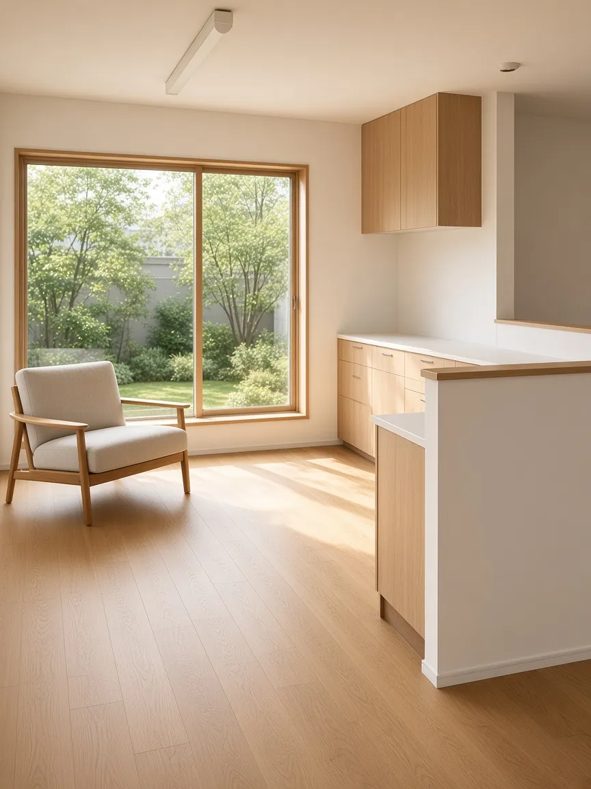